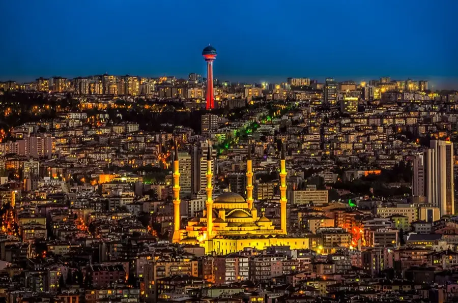

Ankara, Türkiye'nin başkenti ve kalbinin attığı yerdir. Ancak bu büyük şehir, sadece resmi binalar ve modern yapılarla değil, aynı zamanda sessiz ve sakin sokakları, mahalle kültürü ve sıcak insanları ile de bilinir. Ankara'nın arka sokaklarında ve mahallelerinde dolaşmak, şehrin gerçek ruhunu hissetmek için en iyi yoldur.
Ankara'nın sokaklarında yürürken, bir yandan modern şehrin hareketliliğini hissederken, diğer yandan da sessiz ve huzurlu köşelere rastlamak mümkündür. Parklar, küçük kafeler ve ağaçlarla dolu yollar, insanlara dinlenme ve günlük yaşamın stresinden uzaklaşma imkanı sunar. Özellikle bahar aylarında açan çiçekler ve kuş cıvıltıları, Ankara'nın sokaklarına ayrı bir güzellik katmaktadır.
Ankara'nın mahalle kültürü, yıllar geçse de canlılığını korumaktadır. Komşuluk ilişkileri, mahalle bakkalı, çocukların sokaklarda oynadığı oyunlar ve mahalle sakinlerinin birbirine olan bağlılığı, şehrin samimi ve sıcak yüzünü ortaya koyar. Mahalle pazarları, insanları bir araya getiren, taze meyve ve sebzelerin, el yapımı ürünlerin bulunduğu renkli yerlerdir. Bu pazarlar, sadece alışveriş yapılan yerler değil, aynı zamanda sosyal etkileşimin merkezi olarak da önemli bir rol oynar.
Ankara'nın insanları, samimiyeti ve misafirperverliği ile bilinir. Burada, her yaştan ve her kesimden insanın bir arada yaşadığı kozmopolit bir yapı mevcuttur. Herkesin birbirine saygılı olduğu ve yardımlaştığı bu şehirde, yeni tanıştığınız bir kişiyle bile kısa sürede arkadaş olabilirsiniz. Ankara'nın sokaklarında yürürken, bir selamlaşma, bir sohbet daveti ile karşılaşmanız oldukça yaygındır.